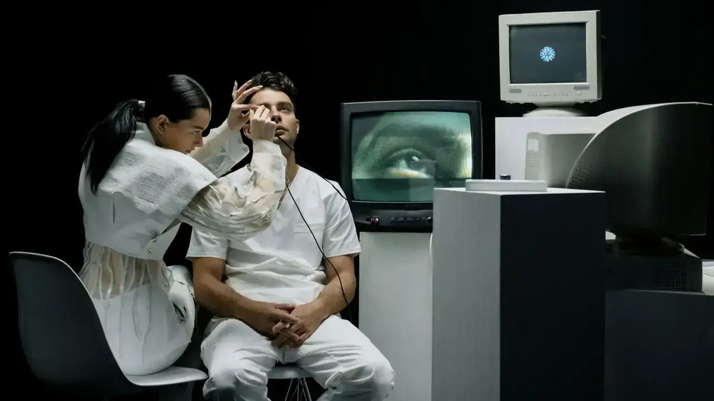

Poli Jantung
Pemeriksaan dan terapi penyakit jantung koroner, hipertensi, gagal jantung, dan gangguan irama jantung oleh kardiolog berpengalaman.
Dari pemeriksaan rutin hingga penanganan gawat darurat, tim dokter spesialis dan perawat kami siap mendampingi Anda dan keluarga dengan ramah, cepat, dan profesional di berbagai penjuru wilayah seluruh Indonesia.
Kami menggabungkan keahlian klinis dokter spesialis terbaik, teknologi diagnostik canggih, dan komitmen keselamatan pasien untuk memberikan perawatan kesehatan berstandar tinggi di Indonesia.

Hasil laboratorium cepat dan akurat terhubung langsung ke rekam medis digital Anda.
Dokter spesialis berpengalaman di berbagai poliklinik dengan jadwal praktik terjadwal.
Administrasi klaim direct-billing tanpa repot untuk kenyamanan perawatan medis Anda.
Respons triase gawat darurat cepat < 5 menit dengan armada ambulans siaga nonstop.
Prosedur pendaftaran dan konsultasi medis yang cepat, transparan, dan tanpa antrean panjang
Cari dokter spesialis sesuai kebutuhan medis Anda dan periksa ketersediaan jadwal praktiknya secara transparan.
Cari Dokter SpesialisTentukan tanggal dan jam konsultasi langsung dari website atau WhatsApp resmi tanpa harus antre fisik di loket.
Reservasi Jadwal SekarangTunjukkan bukti reservasi di meja registrasi, nikmati ruang tunggu modern, dan dapatkan penanganan medis terpadu.
Panduan Kunjungan PasienLayanan konsultasi dan pemeriksaan komprehensif oleh tim dokter spesialis berpengalaman di fasilitas poliklinik modern
Pemeriksaan dan terapi penyakit jantung koroner, hipertensi, gagal jantung, dan gangguan irama jantung oleh kardiolog berpengalaman.
Penanganan stroke, epilepsi, vertigo, migrain, dan gangguan saraf dengan dukungan CT scan, MRI, dan EEG terkini.
Layanan cedera olahraga, patah tulang, nyeri punggung, dan penggantian sendi dengan rehabilitasi pascatindakan terpadu.
Imunisasi, tumbuh kembang, gizi anak, dan perawatan anak sakit dalam suasana dan fasilitas ramah anak.
Diagnosis dan terapi gangguan metabolik, diabetes, hipertensi, saluran cerna, hati, dan penyakit ginjal oleh internis.
Tindakan bedah terencana dan darurat, laparoskopi invasif minimal, usus buntu, hernia, dan bedah digestif modern.
Paket perawatan terpadu, rawat inap modern, fisioterapi, dan instalasi farmasi 24 jam.
Pemeriksaan kesehatan menyeluruh mulai dari paket Basic, Pra-Nikah, Eksekutif, hingga Skrining Korporat dengan hasil digital cepat dan akurat.
Rawat Inap
Akomodasi perawatan medis modern dari VVIP, VIP, hingga Kelas 1-3 serta fasilitas ICU berstandar tinggi dengan pengawasan intensif 24 jam.
Program pemulihan gerak tubuh pascastroke, pascaoperasi, cedera saraf tulang belakang, dan terapi muskuloskeletal oleh fisioterapis ahli.
Kunjungan dokter dan perawat ke rumah untuk perawatan luka, lansia, dan pascarawat inap, serta telekonsultasi dokter spesialis via video call.
 KIA & Vaksin
KIA & Vaksin
Pemeriksaan antenatal kehamilan, pendampingan persalinan, imunisasi wajib & tambahan bayi/anak, serta vaksinasi dewasa (HPV & Influenza).

Farmasi 24 JamPenyediaan obat resep dan non-resep terjamin 100% keasliannya, konsultasi apoteker, peracikan cepat, dan layanan pesan-antar siaga 24 jam.
Kenali tim dokter spesialis berdedikasi tinggi dengan keahlian klinis teruji dan pendekatan berorientasi pada keselamatan pasien

Dokter Spesialis Penyakit Dalam

Dokter Spesialis Bedah Umum

Dokter Spesialis Jantung Intervensi

Dokter Spesialis Jantung & Pembuluh Darah

Dokter Spesialis Bedah Ortopedi

Dokter Spesialis Anak & Pediatri
Kisah nyata dan apresiasi dari pasien serta keluarga yang telah mempercayakan perawatannya kepada kami
Pelayanan di IGD sangat cepat. Begitu datang, ayah saya langsung ditangani dan kami diberi penjelasan yang jelas tentang kondisinya.

Dokter anak di sini sabar sekali. Anak saya yang biasanya takut ke dokter malah betah, dan imunisasinya jadi lancar.

Pendaftaran online memudahkan saya, tidak perlu antre lama. Hasil laboratorium keluar di hari yang sama dan bisa dilihat di ponsel.

Wawasan kesehatan terpercaya, tips gaya hidup sehat, dan panduan pencegahan penyakit oleh tim dokter spesialis


Anda dapat membuat janji temu secara online melalui menu Janji Temu di website ini, menghubungi Call Center kami di 0889-8964-3555, atau chat WhatsApp resmi ke 0889-8964-3555.
Ya, kami melayani pasien BPJS Kesehatan dengan sistem rujukan berjenjang (FKTP/Faskes 1) serta bekerja sama dengan lebih dari 40 mitra asuransi kesehatan swasta dan korporat terkemuka dengan fasilitas klaim direct-billing.
Ya. Instalasi Gawat Darurat (IGD), Ambulans Siaga, Laboratorium Diagnostik Darurat, dan Instalasi Farmasi kami beroperasi 24 jam nonstop setiap hari termasuk hari Minggu dan hari libur nasional.
Anda disarankan berpuasa selama 10–12 jam sebelum pemeriksaan laboratorium darah. Pendaftaran paket MCU dapat dilakukan H-1 melalui halaman Detail Paket MCU atau langsung di loket Medical Check-Up.
Hasil laboratorium rutin umumnya selesai dalam 2–4 jam pada hari yang sama. Anda dapat mengambil hasil fisik di loket hasil atau mengunduh dokumen hasil digital melalui Portal Pasien online kami.